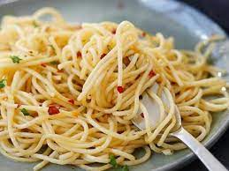

Spagetti

A very fast food to make, rich in Carborhydrate
spaghetti, long cordlike form of pasta. It is best known from Italian cuisine, where it is made from purified middlings of durum wheat (semolina). Today spaghetti generally is made from any of several types of milled wheat.
Ingredients
Steps
- Pour appropriate amount of water inside the cooking pot
- Add the spag when the water starts to boil
- Add salt when it starts to get soft
- Put out fire when you are satisfied with the level of softness
Back to Home